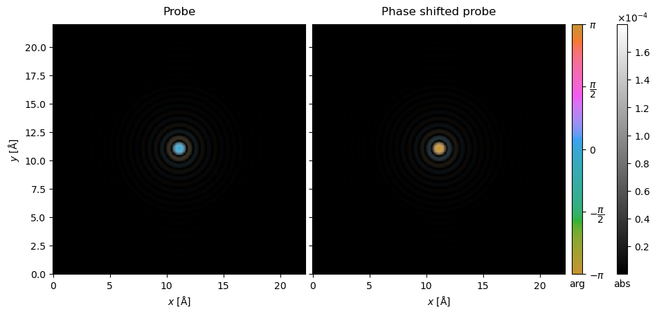
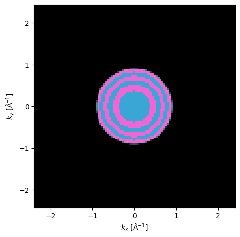
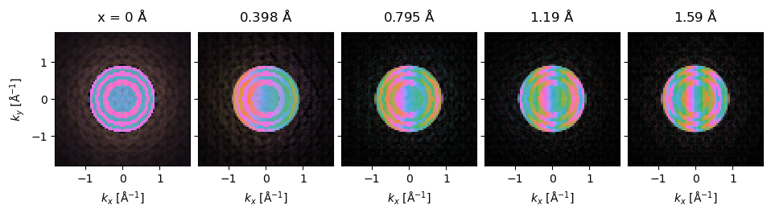
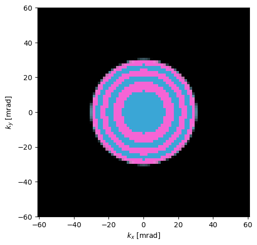
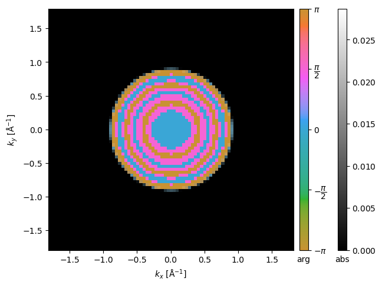

Customization#
In this tutorial, we describe how to extend abTEM and introduce a few general concepts on how the library works. This tutorial requires familarity with NumPy and in some parts a basic understanding of Dask.
The ArrayObject#
In abTEM we describe the \(xy\)-part of a wave function on a 2D grid using a 2D NumPy (or CuPy) array, an ensemble of such wave functions may also be described as a single array with an additional dimensions for each ensemble dimension, for example multiple different positions. We encapsulate that array together with metadata such as the energy and real-space extent and call it a Waves object.
The Waves are an example of an ArrayObject which is the base class for any object in abTEM represented mainly by a single NumPy (or CuPy) array and some metadata for example the energy and sampling of the wave function, another example is the PotentialArray. All ArrayObjects may also be lazy by utilizing a Dask array.
Objects such as the Probe and Potential are not ArrayObject’s, but they act as an interface to create Waves and PotentialArray objects.
atoms = ase.build.mx2("WS2", vacuum=2)
atoms = abtem.orthogonalize_cell(atoms) * (7, 4, 1)
potential = abtem.Potential(atoms, sampling=0.05)
probe = abtem.Probe(energy=120e3, semiangle_cutoff=30)
probe.grid.match(potential)
waves = probe.build()
However, we can run the .build method to create Waves.
waves = probe.build()
You can create any custom wave function by creating a Waves object from a NumPy array. For example, we can take the array created by the Probe and apply a phase shift.
array = waves.array.compute() # compute makes the Dask array into a NumPy array
new_array = array * np.exp(-1.0j * np.pi)
Any 2D Numpy array can be used to create a custom Waves object. To fully define a Waves object you also need to at least provide the energy and sampling.
custom_waves = abtem.Waves(
array=new_array, energy=waves.energy, sampling=waves.sampling
)
To utilize Dask, we can use the .lazy method.
custom_waves = custom_waves.lazy()
custom_waves.array
|
||||||||||||||||
stack = abtem.stack((waves, custom_waves), ("Probe", "Phase shifted probe"))
stack = stack.compute().to_images(convert_complex=False)
[########################################] | 100% Completed | 104.43 ms
stack.show(
explode=True, cbar=True, common_color_scale=True, figsize=(10, 10)
);

Lazy function application#
Next we will apply a somewhat more complicated function to the wave function array, a patterned phase plate as for example used in MIDI-STEM. The function below takes a Waves object and a set of angles for which the phase should be flipped by \(\pi / 2\). The function uses mostly standard NumPy apart from some utility functions from abTEM.
We get the spatial frequencies and wavelength from the Waves object. We use the get_array_module function to make our code agnostic to the array module. This function will return either the NumPy or the CuPy module, depending on the array type, thus enabling the relevant code to work on GPU’s.
We import fft2_convolve from abTEM, this function calculates the FFT convolution using the library provided in the config FFTW, MKL or NumPy on CPU and cuFTT on GPU.
from abtem.core.backend import get_array_module
from abtem.core.fft import fft2_convolve
def phase_flip(
waves: abtem.Waves,
max_angle: float,
num_flips: int,
power: float,
phase_shift: float = np.pi / 2,
) -> np.array:
"""
Applies a radial phase flipping in reciprocal space to the input wave function array.
Parameters
----------
waves : Waves
The abTEM electron wavefunction object.
max_angle : float
The maximum angle used to normalize the radial frequency at which phase flipping occurs [mrad].
num_flips : int
The number of flips in the phase applied within max_angle.
power : float
The exponent used in the power law scaling of frequency of phase flipping with radial spatial frequency.
phase_shift : float, optional
The phase shift value in radians applied to the flipped regions. Defaults to pi / 2.
Returns
-------
np.ndarray
An array representing the convolved wavefunction after the phase flip has been applied.
"""
# Get spatial frequencies for the wave grid.
kx, ky = waves.grid.spatial_frequencies()
# Calculate the square of radial frequencies.
k = np.sqrt(kx[:, None] ** 2 + ky[None] ** 2)
# Convert max_angle to spatial frequencies, adjusted
max_k = max_angle / waves.wavelength / 1e3
# Apply power scaling to the radial frequencies and normalize.
k_normed = (k / max_k) ** power
# Generate a phase flip map using a sinusoidal function of the normalized radial frequencies,
# where the sign of the sine function determines the flip condition.
phase_flip_map = np.sin(k_normed * np.pi * (num_flips + 1)) < 0
# We make our code device agnostic.
xp = get_array_module(waves.array)
phase_flip_map = xp.asarray(phase_flip_map)
# Create a phase shift array for flipping by pi/2 radians.
phase_shift = xp.exp(1.0j * phase_shift * phase_flip_map)
# Convolve wave array with phase shift in Fourier space.
array = fft2_convolve(waves.array, phase_shift)
return array
We build a Waves object and apply the phase_flip function.
# We make sure to build the probe at (0., 0.) instead of the default center
waves = probe.build((0.0, 0.0))
waves.array = phase_flip(waves, max_angle=30.0, num_flips=5, power=2.0)
diffraction = waves.diffraction_patterns(return_complex=True).crop(80).compute()
[########################################] | 100% Completed | 203.69 ms
diffraction.show(cmap="hsluv");

The phase_flip function is applied lazily to the waves.
waves.is_lazy
True
There is a subtle issue here. The phase_flip_map array is calculated at the point of call, which is fine in this case, but goes against the idea of lazy evaluation. In addition, the phase_flip_map array has to be placed into the Dask task graph, which can result in expensive serialization for distributed calculations.
The issue is quite simply overcome by using the apply_func method, which will apply the phase_flip function lazily when the Waves are lazy. In addition, waves.array inside the function is non-lazy at the point of compute and only the angles array is embedded in the task graph.
waves = probe.build((0.0, 0.0))
waves = waves.apply_func(phase_flip, max_angle=30.0, num_flips=5, power=2.0)
The scan method can be used as usual.
Note
The scan objects shifts the Waves based on \((x,y)=(0,0)\). So, make sure the probe wave function is placed at (0, 0) before applying a scan. It also bears noting that resolving properties such as the scan Nyquist sampling based on a Waves object may fail.
scan = abtem.GridScan(
start=(0, 0),
end=(1 / 7, 1 / 4),
sampling=0.4,
fractional=True,
potential=atoms,
)
waves = probe.build(scan=(0.0, 0.0)).apply_func(
phase_flip, max_angle=30, num_flips=5, power=2
)
scanned_waves = waves.scan(scan=scan, potential=potential)
diffraction_patterns = scanned_waves.diffraction_patterns(return_complex=True)
diffraction_patterns.compute()
[########################################] | 100% Completed | 9.11 sms
<abtem.measurements.DiffractionPatterns at 0x173406790>
We show the result as an exploded plot.
diffraction_patterns[:5, 0].crop(60).show(explode=True, figsize=(10, 6));

Object-oriented implementation (WavesTranform)#
A more formal extension to abTEM may be accomplished by subclassing the WavesTransform or its parent class ArrayObjectTransform. By extending abTEM this way, the implementation follows the object-oriented design of the code. For simulations with a large number of tasks this implementation may also allow abTEM to better optimize the Dask task graph by merging tasks.
In this section, we show how to implement the example from the preceding section using a WavesTransform. We will create a new PhaseRamp object that takes the argument gradient; to do this, we need three things:
Implement the private
_calculate_new_arraymethod. This method takes aWavesobject and returns a NumPy array of the same shape (unless otherwise specified, see further on)All input arguments exposed as public properties
Docstrings added using the NumPy docstring format
from typing import Sequence
class PatternedPhasePlate(abtem.transform.WavesTransform):
"""
A patterned phase plate modifying the phase of an electron wavefunction at specific angles.
Parameters
----------
angles: sequence of float
A sequence of angles at which the phase plate will flip the phase of the electron wavefunction [mrad].
"""
def __init__(self, max_angle, num_flips, power):
self.max_angle = max_angle
self.num_flips = num_flips
self.power = power
super().__init__()
def _calculate_new_array(self, waves: abtem.Waves) -> np.ndarray:
return phase_flip(waves, self.max_angle, self.num_flips, self.power)
We can apply our PatternedPhasePlate object using the apply_transform method, which in addition to
phase_plate = PatternedPhasePlate(30, 5, 2)
waves = probe.build((0.0, 0.0)).apply_transform(phase_plate)
diffraction = waves.diffraction_patterns(return_complex=True).crop(60).compute()
[########################################] | 100% Completed | 105.23 ms
diffraction.show(units="mrad");

Using existing metadata and broadcasting across ensemble axes#
In the above, we supplied the semiangle cutoff explicitely, but we can also get this from the metadata if the Waves are created from a Probe. If there
Another way to do this is using the the Phase
waves.get_from_metadata(
"semiangle_cutoff",
broadcastable=True,
)
30
class PatternedPhasePlate(abtem.transform.WavesTransform):
def __init__(
self,
num_flips: int,
power: float = 2.0,
):
self.num_flips = num_flips
self.power = power
super().__init__()
def _calculate_new_array(self, waves: abtem.Waves) -> np.ndarray:
semiangle_cutoff = waves.get_from_metadata(
"semiangle_cutoff",
broadcastable=True,
)
return phase_flip(waves, semiangle_cutoff, self.num_flips, self.power)
waves.array
|
||||||||||||||||
patterned_phase_plate = PatternedPhasePlate(5, np.pi / 2)
patterned_waves = waves.apply_transform(patterned_phase_plate)
diffraction = patterned_waves.diffraction_patterns(return_complex=True).crop(60).compute()
[########################################] | 100% Completed | 104.31 ms
diffraction.show(cbar=True, vmin=0.);

Distributions of parameters (advanced)#
abTEM provides an easy way to simulate multiple values of a specific parameter. This is used when, for example, simulating partial coherence or of course to simulate multiple probe positions.
ctf = abtem.CTF(defocus=np.linspace(0, 100, 100))
waves = probe.build((0.0, 0.0)).apply_transform(ctf, max_batch=25)
waves.array
|
||||||||||||||||
To enable this in an extension we need to do a few more things:
We need to use the private
_validate_distributionmethod on all parameters that should allow a distribution. This ensure the correctness of the input and converts it to a proper abTEM distribution if it is not already one.The
superclass (i.e.WavesTransform) need to know that a property is a distribution, this is accomplished by providing the names of the “distribution” parameters.Implement the
ensemble_axes_metadataproperty. This should return a list ofAxisMetadataobjects, one for each added array dimension.